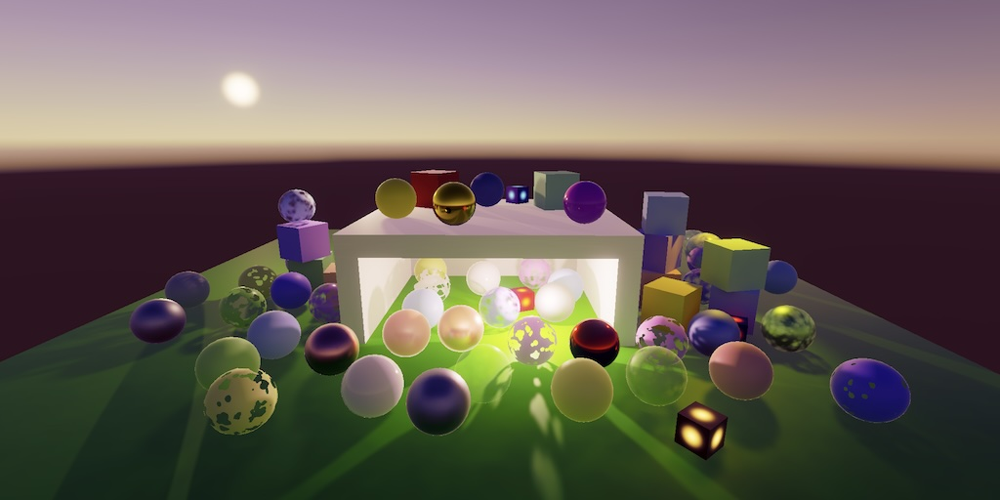
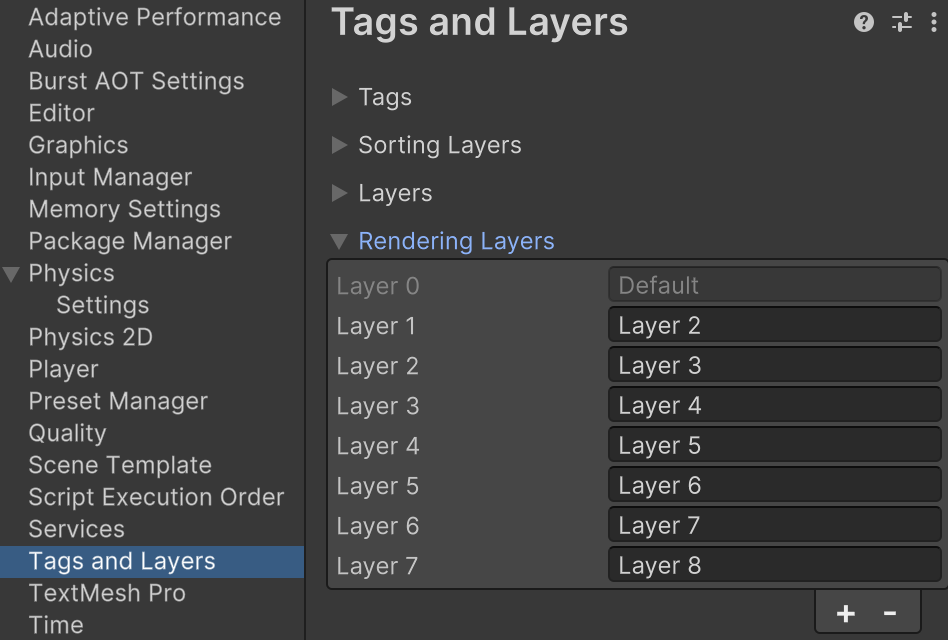

Custom SRP 4.0.0
Unity 6

This tutorial is made with Unity 6000.0.27f1 and follows Custom SRP 3.2.0.
Migration
It is time to make the jump to Unity 6. After we open our project in the new Unity version it'll ask us if it should automatically upgrade our code. Decline, because we'll do it manually. Once the editor is open we are greeted with a bunch of errors and warning that we'll have to take care of.
The upgrade also migrated to higher versions of the packages that we use, which is fine. We did get a new Multiplayer Center package, which I removed from the project.
Compiler Errors
A lot of the compiler errors are due to a namespace change, because the render graph module is no longer experimental. Replace all usage of the UnityEngine.Experimental.Rendering.RenderGraphModule namespace with UnityEngine.Rendering.RenderGraphModule. The other two experimental namespaces—Rendering and GlobalIllumination—have not changed.
Another group of compiler errors are caused by the renaming of the ComputeBufferHandle type, with is now simply BufferHandle.
Likewise, all usage of builder.ReadComputeBuffer has to become builder.ReadBuffer.
While changing that code, we can also remove the lightData.tilesBuffer.IsValid() check in GeometryPass because we're now always using Forward+ rendering.
We also have to change builder.WriteComputeBuffer and renderGraph.CreateComputeBuffer invocations likewise, removing Compute from the method names. Also, change the ComputeBufferDesc struct type fo BufferDesc. Its count property becomes its first constructor argument and its stride property becomes its second argument. For example, here is the change for the creation of LightingPass.directionalLightDataBuffer:
pass.directionalLightDataBuffer =
builder.WriteBuffer(renderGraph.CreateBuffer(new BufferDesc(
maxDirectionalLightCount, DirectionalLightData.stride)
{
name = "Directional Light Data" //,
//count = maxDirectionalLightCount,
//stride = DirectionalLightData.stride
}));
Furthermore, the RenderGraph.RecordAndExecute method no longer exists. Instead of relying on an empty disposable we now have to explicitly begin and end recording and then execute in CameraRenderer.Render. We'll repurpose the existing using block for our profiling scope.
//using (renderGraph.RecordAndExecute(renderGraphParameters))renderGraph.BeginRecording(renderGraphParameters); using (new RenderGraphProfilingScope(renderGraph, cameraSampler)) {//using var _ = new RenderGraphProfilingScope(//renderGraph, cameraSampler);… } renderGraph.EndRecordingAndExecute();
Finally, in CustomRenderPipeline.lightsDelegate in the editor partial class, replace LightType.Area with LightType.Rectangle.
This should have eliminated all compiler errors and our RP should be functional again, through there are still many warnings.
Now open and save all scenes so their lighting data gets stored in assets appropriately. Note that light baking no longer happens automatically, it has to be done manually.
Render Pipeline Asset
There are two warnings related to CustomRenderPipelineAsset. First, we have to override the pipelineType property to return the type of our custom render pipeline.
public override Type pipelineType => typeof(CustomRenderPipeline);
Second, we have to override the renderPipelineShaderTag property to return a string that identifies our RP in shaders. We don't worry about that and just return the empty string, which does the same as the old behavior, which means that our RP does not identify itself and all shaders not specifically targeting a render pipeline will be used and included in builds.
public override string renderPipelineShaderTag => string.Empty;
We could've also inherited the generic RenderPipelineAsset type to implicitly override these properties, but they're simple so we do it ourselves.
Rendering Layer Mask API
Unity 6 introduced a new API for rendering layer masks. Instead of providing them via the render pipeline they're now configured via Tags and Layers / Rendering Layers in the project settings. To mirror the layers that we've used before, include eight custom layers, with the default layer representing layer 1 and incrementing from there. If we do not include the layers here they would be referred to as unnamed layers in the project and cannot easily be configured in inspectors.

We can now also use the RenderingLayerMask type, which is functionally an unsigned integer that can be edited via the inspector. So let's change CameraSettings.renderingLayerMask to that type. Unfortunately we cannot simply replace the type, as that would reset the configured masks. So we introduce an extra newRenderingLayerMask field and hide the old one. This is a temporary measure to facilitate automatic upgrading and we'll tidy it up in a future release.
//[RenderingLayerMaskField][HideInInspector, Obsolete("Use newRenderingLayerMask instead.")] public int renderingLayerMask = -1; public RenderingLayerMask newRenderingLayerMask = -1;
Use the new field in CameraRenderer.Render instead of the old one. Also, we migrate the camera's mask while rendering if needed while in the editor, clearing the old mask and marking the scene as dirty to indicate that it needs to be saved.
#if UNITY_EDITOR
#pragma warning disable 0618
if (cameraSettings.renderingLayerMask != 0)
{
// Migrate camera settings to new rendering layer mask.
cameraSettings.newRenderingLayerMask =
(uint)cameraSettings.renderingLayerMask;
cameraSettings.renderingLayerMask = 0;
UnityEditor.SceneManagement.EditorSceneManager.MarkSceneDirty(
UnityEditor.SceneManagement.EditorSceneManager.GetActiveScene()
);
}
#pragma warning restore 0618
#endif
bool useColorTexture, useDepthTexture;
Now we can remove our custom RenderingLayerMaskDrawer. Also remove CustomRenderPipelineAsset.renderingLayerMaskNames, which means that we can get rid of the entire editor partial class. Thus CustomRenderPipelineAsset no longer needs to be a partial class.
//public partial classpublic class CustomRenderPipelineAsset : RenderPipelineAsset { … }
Light Editor
We used the CustomEditorForRenderPipeline attribute to replace the light editor with our own CustomLightEditor when using our RP. This attribute now needs to be replaced with a regular CustomEditor attribute and a separate SupportedOnRenderPipeline attribute.
[CanEditMultipleObjects]//[CustomEditorForRenderPipeline(//typeof(Light), typeof(CustomRenderPipelineAsset))][CustomEditor(typeof(Light))] [SupportedOnRenderPipeline(typeof(CustomRenderPipelineAsset))] public class CustomLightEditor : LightEditor { … }
We no longer need to draw our custom rendering layer mask widget in OnInspectorGUI.
base.OnInspectorGUI();//RenderingLayerMaskDrawer.Draw(//settings.renderingLayerMask, renderingLayerMaskLabel);
Remove the GUI content declarations that are no longer needed. While we're at it, also remove the old warning specific to lights-per-object as well, as we no longer support that mode.
//const string//warningOnlyShadows = …,//warningOnlyShadowsLightsPerObject = …;//static readonly GUIContent renderingLayerMaskLabel = …;public override void OnInspectorGUI() { … if (light.cullingMask != -1) { EditorGUILayout.HelpBox( "Culling Mask only affects shadows.", MessageType.Warning); } }
Open all scenes and make sure that all cameras render, despite the warnings that are still coming. Then save the scenes to migrate the rendering mask settings.
Camera Editor
We still get warnings, but a lot extra get generated when we have a camera selected. These warnings are generated by the default camera inspector, because it's doing something that's not supposed to be done when a custom RP is in use. Specifically, it's invoking GetCommandBuffers on the camera, which is only valid for the built-in RP. Unfortunately the only way to stop this is to completely override the camera inspector, turning it into a default inspector. We could make a better inspector, but for now we simply downgrade it.
Create a CustomCameraEditor that simply extends Editor and put its asset file in the Custom RP / Editor folder. Apply the SupportedOnRenderPipeline attribute to it so it's only used for our RP.
using UnityEngine;
using UnityEditor;
using UnityEngine.Rendering;
[CanEditMultipleObjects]
[CustomEditor(typeof(Camera))]
[SupportedOnRenderPipeline(typeof(CustomRenderPipelineAsset))]
public class CustomCameraEditor : Editor {}
Remove Old Deprecated Settings
At this point we have taken care of all warnings that don't directly relate to the rendering code. Before we deal with the rest we'll get rid of the settings that we deprecated earlier.
Remove all fields of CustomRenderPipelineAsset except settings. Then remove the settings upgrade code from CreatePipeline.
protected override RenderPipeline CreatePipeline() => new CustomRenderPipeline(settings);
Remove the old toggle for lights-per-object mode from CustomRenderPipelineSettings.
//[Header("Deprecated Settings")]//[Tooltip("Deprecated, lights-per-object drawing mode will be removed.")]//public bool useLightsPerObject;
And remove the lights-per-object check from DebugPass.Record.
if (CameraDebugger.IsActive amp;&& camera.cameraType <= CameraType.SceneView)//&&!settings.useLightsPerObject){ … }
Renderer Lists for Everything
The remaining warnings instruct us to use renderer lists when rendering the skybox and shadow casters. This wasn't possible before and we had to rely on old rendering API calls that didn't integrate with the render graph. Now we can finally use a unified approach.
Skybox
In SkyboxPass we no longer need to store the camera in a field. Instead we have to keep track of a renderer list handle, like in GeometryPass. We draw the renderer list in Render instead of specifically drawing a skybox.
//Camera camera;RendererListHandle list; void Render(RenderGraphContext context) {//context.renderContext.DrawSkybox(camera);context.cmd.DrawRendererList(list); context.renderContext.ExecuteCommandBuffer(context.cmd); context.cmd.Clear(); }
Create and use the renderer list in Record, using the RenderGraph.CreateSkyboxRendererList method. Because the render graph now tracks usage of a renderer list for this pass we have to disable pass culling for it. If we don't do that the pass would be skipped if no geometry is in view, because the skybox doesn't count as geometry.
//pass.camera = camera;pass.list = builder.UseRendererList( renderGraph.CreateSkyboxRendererList(camera)); builder.AllowPassCulling(false);
Shadows
The Shadows class requires the most changes, because we now have to build renderer lists for all shadow tiles and have to change when we cull shadow casters. The old approach required us to cull and draw shadows together, so we had a sequence of cull, draw, cull, draw, cull, draw… which is inefficient. The new approach will schedule all culling jobs when recording the render graph so it becomes cull, cull, cull… potentially parallelized, and later draw, draw, draw… This means that we have to split the culling and drawing code.
The first step is to build renderer lists. Create a new BuildRendererList method for this, with parameters for the render graph, builder, and scriptable render context used while building the graph. Invoke this method in GetResources, adding the context as a parameter for it.
public ShadowResources GetResources(
RenderGraph renderGraph,
RenderGraphBuilder builder,
ScriptableRenderContext context)
{
…
BuildRendererLists(renderGraph, builder, context);
return new ShadowResources(…);
}
void BuildRendererLists(
RenderGraph renderGraph,
RenderGraphBuilder builder,
ScriptableRenderContext context)
{}
Also add a parameter for the context to LightingPass.Record so it can be passed on to GetResources.
public static LightResources Record(
…
int renderingLayerMask,
ScriptableRenderContext context)
{
…
return new LightResources(
…
pass.shadows.GetResources(renderGraph, builder, context));
}
And provide the context in CameraRenderer.Render.
LightResources lightResources = LightingPass.Record( renderGraph, cullingResults, bufferSize, settings.forwardPlus, shadowSettings, cameraSettings.maskLights ? cameraSettings.newRenderingLayerMask : -1, context);
Back to Shadows, we'll have to make use of two native arrays to communicate information to the culling jobs. We'll add convenient fields for them. The first array contains the culling info per light, stored as LightShadowCasterCullingInfo values. The second array is for ShadowSplitData, which are our shadow tiles per light.
using Unity.Collections; … NativeArray<LightShadowCasterCullingInfo> cullingInfoPerLight; NativeArray<ShadowSplitData> shadowSplitDataPerLight;
Besides that we also have to track some data ourselves, which we determine while building the renderer lists and use while drawing them. Specifically, the information that we need to remember per shadow tile is the renderer list handle and the view and projection matrices. Let's introduce a RenderInfo struct for that and create two arrays, one for the directional info and one for the other info. We reserve space for the maximum allowed shadowed directional lights with the maximum amount of cascades. And we reserve space for the maximum allowed shadowed other lights with the max tiles per light, which is 6 for point lights, for which we introduce a constant. This isn't the most efficient way to store the data but it's simple so we use this approach, at least for now.
const int maxTilesPerLight = 6;
…
struct RenderInfo
{
public RendererListHandle handle;
public Matrix4x4 view, projection;
}
RenderInfo[]
directionalRenderInfo =
new RenderInfo[maxShadowedDirLightCount * maxCascades],
otherRenderInfo =
new RenderInfo[maxShadowedOtherLightCount * maxTilesPerLight];
Allocate the native arrays temporarily in Setup. We need to supply culling info for all visible lights. If a light has no shadows we can leave its entry at its default zero value, so we have to zero-initialize this array, which is the default behavior. For the split data we simply reserve space for the maximum possible tiles for every light, which is more than needed but we again keep things simple. This array doesn't need to be initialized because we'll specify which indices are to be used later.
public void Setup(CullingResults cullingResults, ShadowSettings settings)
{
…
cullingInfoPerLight = new NativeArray<LightShadowCasterCullingInfo>(
cullingResults.visibleLights.Length, Allocator.Temp);
shadowSplitDataPerLight = new NativeArray<ShadowSplitData>(
cullingInfoPerLight.Length * maxTilesPerLight,
Allocator.Temp, NativeArrayOptions.UninitializedMemory);
}
In BuildRendererLists we have to loop through all shadow-casting lights like we do when rendering them, so the code is structured similarly. The main difference is that we're going to invoke new build methods instead of render methods per light, passing them the light index, render graph, and builder.
When finished, if there are any shadow-casting lights, we invoke CullShadowCasters on the context, passing it the culling results and a ShadowCastersCullingInfos value, via which we provide it our native arrays.
Also, we store the split and tile size values in fields so we can use them both when building the lists and when rendering later.
int directionalSplit, directionalTileSize;
int otherSplit, otherTileSize;
…
void BuildRendererLists(
RenderGraph renderGraph,
RenderGraphBuilder builder,
ScriptableRenderContext context)
{
if (shadowedDirLightCount > 0)
{
int atlasSize = (int)settings.directional.atlasSize;
int tiles =
shadowedDirLightCount * settings.directional.cascadeCount;
directionalSplit = tiles <= 1 ? 1 : tiles <= 4 ? 2 : 4;
directionalTileSize = atlasSize / directionalSplit;
for (int i = 0; i < shadowedDirLightCount; i++)
{
BuildDirectionalRendererList(i, renderGraph, builder);
}
}
if (shadowedOtherLightCount > 0)
{
int atlasSize = (int)settings.other.atlasSize;
int tiles = shadowedOtherLightCount;
otherSplit = tiles <= 1 ? 1 : tiles <= 4 ? 2 : 4;
otherTileSize = atlasSize / otherSplit;
for (int i = 0; i < shadowedOtherLightCount;)
{
if (shadowedOtherLights[i].isPoint)
{
BuildPointShadowsRendererList(i, renderGraph, builder);
i += 6;
}
else
{
BuildSpotShadowsRendererList(i, renderGraph, builder);
i += 1;
}
}
}
if (shadowedDirLightCount + shadowedOtherLightCount > 0)
{
context.CullShadowCasters(
cullingResults,
new ShadowCastersCullingInfos
{
perLightInfos = cullingInfoPerLight,
splitBuffer = shadowSplitDataPerLight
});
}
}
We start with the BuildSpotShadowsRendererList method. It's a copy of the RenderSpotShadows code that figures out all the data needed for culling and drawing. It sets the renderer info and builds a renderer list instead of directly culling and drawing, using CreateShadowRendererList, passing it the shadow settings. The shadow projection type is no longer part of ShadowDrawingSettings, it is instead part of LightShadowCasterCullingInfo.
A spotlight always has a single map, occupying a single shadow tile, which is a single split. We store the split data using an offset equal to the visible light index multiplied with the max tiles per light, so that's very sparse for spotlights, but this way we use the same offset logic everywhere. We indicate which split data to use by assigning an RangeInt value to the splitRange field of the culling info. As it's only a single split the length is 1.
void BuildSpotShadowsRendererList(
int index,
RenderGraph renderGraph,
RenderGraphBuilder builder)
{
ShadowedOtherLight light = shadowedOtherLights[index];
var shadowSettings = new ShadowDrawingSettings(
cullingResults, light.visibleLightIndex)
{
useRenderingLayerMaskTest = true
};
ref RenderInfo info = ref otherRenderInfo[index * maxTilesPerLight];
cullingResults.ComputeSpotShadowMatricesAndCullingPrimitives(
light.visibleLightIndex, out info.view, out info.projection,
out ShadowSplitData splitData);
int splitOffset = light.visibleLightIndex * maxTilesPerLight;
shadowSplitDataPerLight[splitOffset] = splitData;
info.handle = builder.UseRendererList(
renderGraph.CreateShadowRendererList(ref shadowSettings));
cullingInfoPerLight[light.visibleLightIndex] =
new LightShadowCasterCullingInfo
{
projectionType = BatchCullingProjectionType.Perspective,
splitRange = new RangeInt(splitOffset, 1)
};
}
Create BuildPointShadowsRendererList using the same approach. In this case we have to do six times as much work as for spotlights. Note that we have to build separate renderer lists for all splits. We cannot reuse renderer lists, even though the shadow settings are the same for all six lists of the light. Each list is only allowed to be drawn once.
void BuildPointShadowsRendererList(
int index, RenderGraph renderGraph, RenderGraphBuilder builder)
{
ShadowedOtherLight light = shadowedOtherLights[index];
var shadowSettings = new ShadowDrawingSettings(
cullingResults, light.visibleLightIndex)
{
useRenderingLayerMaskTest = true
};
float texelSize = 2f / otherTileSize;
float filterSize = texelSize * settings.OtherFilterSize;
float bias = light.normalBias * filterSize * 1.4142136f;
float fovBias =
Mathf.Atan(1f + bias + filterSize) * Mathf.Rad2Deg * 2f - 90f;
int splitOffset = light.visibleLightIndex * maxTilesPerLight;
for (int i = 0; i < 6; i++)
{
ref RenderInfo info =
ref otherRenderInfo[index * maxTilesPerLight + i];
cullingResults.ComputePointShadowMatricesAndCullingPrimitives(
light.visibleLightIndex, (CubemapFace)i, fovBias,
out info.view, out info.projection,
out ShadowSplitData splitData);
shadowSplitDataPerLight[splitOffset + i] = splitData;
info.handle = builder.UseRendererList(
renderGraph.CreateShadowRendererList(ref shadowSettings));
}
cullingInfoPerLight[light.visibleLightIndex] =
new LightShadowCasterCullingInfo
{
projectionType = BatchCullingProjectionType.Perspective,
splitRange = new RangeInt(splitOffset, 6)
};
}
BuildDirectionalRendererList works the same way, but now for directional shadow cascades.
void BuildDirectionalRendererList(
int index,
RenderGraph renderGraph,
RenderGraphBuilder builder)
{
ShadowedDirectionalLight light = shadowedDirectionalLights[index];
var shadowSettings = new ShadowDrawingSettings(
cullingResults, light.visibleLightIndex)
{
useRenderingLayerMaskTest = true
};
int cascadeCount = settings.directional.cascadeCount;
Vector3 ratios = settings.directional.CascadeRatios;
float cullingFactor =
Mathf.Max(0f, 0.8f - settings.directional.cascadeFade);
int splitOffset = light.visibleLightIndex * maxTilesPerLight;
for (int i = 0; i < cascadeCount; i++)
{
ref RenderInfo info =
ref directionalRenderInfo[index * maxCascades + i];
cullingResults.ComputeDirectionalShadowMatricesAndCullingPrimitives(
light.visibleLightIndex, i, cascadeCount, ratios,
directionalTileSize, light.nearPlaneOffset, out info.view,
out info.projection, out ShadowSplitData splitData);
splitData.shadowCascadeBlendCullingFactor = cullingFactor;
shadowSplitDataPerLight[splitOffset + i] = splitData;
if (index == 0)
{
directionalShadowCascades[i] = new DirectionalShadowCascade(
splitData.cullingSphere,
directionalTileSize, settings.DirectionalFilterSize);
}
info.handle =
builder.UseRendererList(renderGraph.CreateShadowRendererList(
ref shadowSettings));
}
cullingInfoPerLight[light.visibleLightIndex] =
new LightShadowCasterCullingInfo
{
projectionType = BatchCullingProjectionType.Orthographic,
splitRange = new RangeInt(splitOffset, cascadeCount)
};
}
This takes care of building all renderer lists and shadow caster culling. Next up is the rendering code, which now becomes simpler.
First, we no longer need to use the scriptable render context while rendering, so remove its field and no longer set it in Render. Also, all rendering commands can now get issued with a single command buffer execution. We do this at the end of Render, so we no longer need the ExecuteBuffer method. Also, we no longer keep resetting the global depth bias, instead doing it once after we're done rendering all shadows casters.
//ScriptableRenderContext context;… public void Render(RenderGraphContext context) { buffer = context.cmd;//this.context = context.renderContext;… buffer.SetGlobalDepthBias(0f, 0f); buffer.SetGlobalBuffer( directionalShadowCascadesId, directionalShadowCascadesBuffer); …//ExecuteBuffer();context.renderContext.ExecuteCommandBuffer(buffer); buffer.Clear(); } …//void ExecuteBuffer() { … }
The RenderDirectionalShadows method that loops through all directional lights now can get simplified. It no longer needs to execute the buffer nor calculate tiles, split, and tile size. Also, we can move the invocation of BeginSample to before setting and clearing the render target, as the frame debugger hierarchy bug got fixed.
void RenderDirectionalShadows()
{
int atlasSize = (int)settings.directional.atlasSize;
atlasSizes.x = atlasSize;
atlasSizes.y = 1f / atlasSize;
buffer.BeginSample("Directional Shadows");
buffer.SetRenderTarget(…);
buffer.ClearRenderTarget(true, false, Color.clear);
buffer.SetGlobalFloat(shadowPancakingId, 1f);
//buffer.BeginSample("Directional Shadows");
//ExecuteBuffer();
//int tiles = shadowedDirLightCount * settings.directional.cascadeCount;
//int split = tiles <= 1 ? 1 : tiles <= 4 ? 2 : 4;
//int tileSize = atlasSize / split;
for (int i = 0; i < shadowedDirLightCount; i++)
{
RenderDirectionalShadows(i); //split, tileSize);
}
…
//ExecuteBuffer();
}
The RenderDirectionalShadows method for a single directional light can be simplified a lot, no longer culling and relying on the info that we stored earlier. Drawing is now done by drawing the appropriate renderer list. Setting the global depth bias can also be hoisted out of the loop.
void RenderDirectionalShadows(int index)//, int split, int tileIndex){//ShadowedDirectionalLight light = shadowedDirectionalLights[index];//var shadowSettings = new ShadowDrawingSettings(…) { … }int cascadeCount = settings.directional.cascadeCount; int tileOffset = index * cascadeCount;//Vector3 ratios = settings.directional.CascadeRatios;//float cullingFactor =//Mathf.Max(0f, 0.8f - settings.directional.cascadeFade);float tileScale = 1f / directionalSplit; buffer.SetGlobalDepthBias( 0f, shadowedDirectionalLights[index].slopeScaleBias); for (int i = 0; i < cascadeCount; i++) {//cullingResults.ComputeDirectionalShadowMatricesAndCullingPrimitives(…);/splitData.shadowCascadeBlendCullingFactor = cullingFactor;//shadowSettings.splitData = splitData;//if (index == 0) { … }RenderInfo info = directionalRenderInfo[index * maxCascades + i]; int tileIndex = tileOffset + i; directionalShadowMatrices[tileIndex] = ConvertToAtlasMatrix( info.projection * info.view, SetTileViewport( tileIndex, directionalSplit, directionalTileSize), tileScale); buffer.SetViewProjectionMatrices(info.view, info.projection);//buffer.SetGlobalDepthBias(0f, light.slopeScaleBias);//ExecuteBuffer();//context.DrawShadows(ref shadowSettings);//buffer.SetGlobalDepthBias(0f, 0f);buffer.DrawRendererList(info.handle); } }
RenderOtherShadows can be simplied in the same way.
void RenderOtherShadows()
{
int atlasSize = (int)settings.other.atlasSize;
atlasSizes.z = atlasSize;
atlasSizes.w = 1f / atlasSize;
buffer.BeginSample("Other Shadows");
buffer.SetRenderTarget(…);
buffer.ClearRenderTarget(true, false, Color.clear);
buffer.SetGlobalFloat(shadowPancakingId, 0f);
//buffer.BeginSample("Other Shadows");
//ExecuteBuffer();
//int tiles = shadowedOtherLightCount;
//int split = tiles <= 1 ? 1 : tiles <= 4 ? 2 : 4;
//int tileSize = atlasSize / split;
for (int i = 0; i < shadowedOtherLightCount;)
{
if (shadowedOtherLights[i].isPoint)
{
RenderPointShadows(i); //, split, tileSize);
i += 6;
}
else
{
RenderSpotShadows(i); //, split, tileSize);
i += 1;
}
}
…
//ExecuteBuffer();
}
Next up is RenderSpotShadows.
void RenderSpotShadows(int index)//, int split, int tileSize){ ShadowedOtherLight light = shadowedOtherLights[index];//var shadowSettings = new ShadowDrawingSettings(…) { … }//cullingResults.ComputeSpotShadowMatricesAndCullingPrimitives(…);//shadowSettings.splitData = splitData;RenderInfo info = otherRenderInfo[index * maxTilesPerLight]; float texelSize = 2f / (otherTileSize * info.projection.m00); float filterSize = texelSize * settings.OtherFilterSize; float bias = light.normalBias * filterSize * 1.4142136f; Vector2 offset = SetTileViewport(index, otherSplit, otherTileSize); float tileScale = 1f / otherSplit; otherShadowData[index] = new OtherShadowData( offset, tileScale, bias, atlasSizes.w * 0.5f, ConvertToAtlasMatrix( info.projection * info.view, offset, tileScale)); buffer.SetViewProjectionMatrices(info.view, info.projection); buffer.SetGlobalDepthBias(0f, light.slopeScaleBias);//ExecuteBuffer();//context.DrawShadows(ref shadowSettings);//buffer.SetGlobalDepthBias(0f, 0f);buffer.DrawRendererList(info.handle); }
And finally RenderPointShadows.
void RenderPointShadows(int index)//, int split, int tileSize){ ShadowedOtherLight light = shadowedOtherLights[index];//var shadowSettings = new ShadowDrawingSettings(…) { … }float texelSize = 2f / otherTileSize; float filterSize = texelSize * settings.OtherFilterSize; float bias = light.normalBias * filterSize * 1.4142136f;//float fovBias = …;float tileScale = 1f / otherSplit; buffer.SetGlobalDepthBias(0f, light.slopeScaleBias); for (int i = 0; i < 6; i++) { RenderInfo info = otherRenderInfo[index * maxTilesPerLight + i];//cullingResults.ComputePointShadowMatricesAndCullingPrimitives(…);info.view.m11 = -info.view.m11; info.view.m12 = -info.view.m12; info.view.m13 = -info.view.m13;//shadowSettings.splitData = splitData;int tileIndex = index + i; Vector2 offset = SetTileViewport( tileIndex, otherSplit, otherTileSize); otherShadowData[tileIndex] = new OtherShadowData( offset, tileScale, bias, atlasSizes.w * 0.5f, ConvertToAtlasMatrix( info.projection * info.view, offset, tileScale)); buffer.SetViewProjectionMatrices(info.view, info.projection);//buffer.SetGlobalDepthBias(0f, light.slopeScaleBias);//ExecuteBuffer();//context.DrawShadows(ref shadowSettings);//buffer.SetGlobalDepthBias(0f, 0f);buffer.DrawRendererList(info.handle); } }
Our render pipeline has now been fully migrated to Unity 6, generates no more warning, performs more efficient shadow caster culling, and uses renderer lists everywhere. Our approach is a bit crude, getting everything working in the simplest way with the least amount of changes. It also doesn't yet take advantage of other new features like specialized passes. We start working on that in the next tutorial, which is Custom SRP 5.0.0.